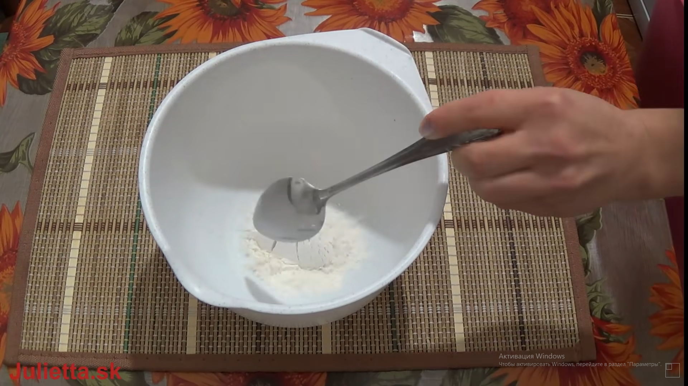

Кекс в микроволновке
Хорошего дня вам! Сегодня я вас научу как готовить шоколадный кекс в микроволновке

нам понадобится:
Мука
Сахар
Какао
Молоко
Яйцо
Сливочное масло.
Для начала кидаем в миску 4 столовых ложки муки.

Затем добавляем 4 столовых ложки сахара
после этого добавляем туда яйцо.
потом добавляем 3 столовых ложки молока
Затем растаплеваем масло и выливаем в наше тесто
дальше добавляем 2 столовых ложки какако
потом перемешиваем всё с помощью миксера
затем разливаем это тесто по кружкам

затем ставим в микроволновку на 3 минуты
блюдо готово